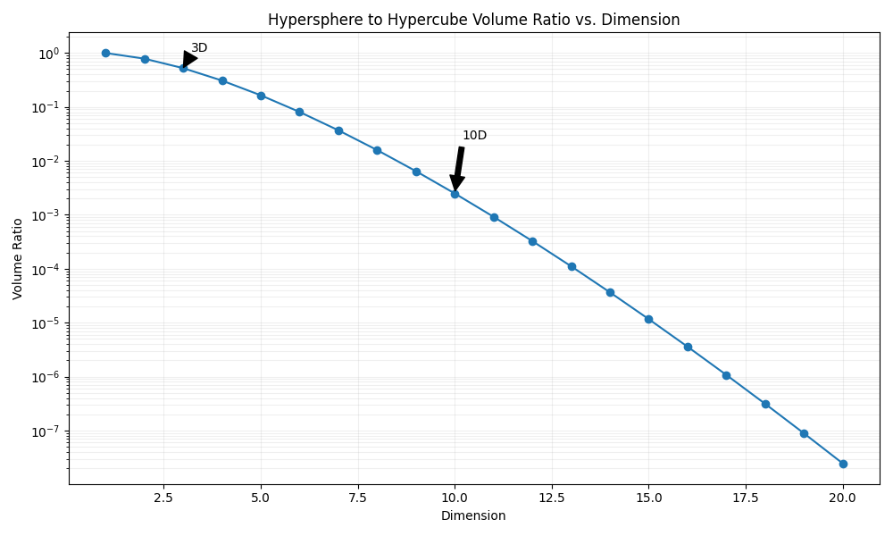

Low Rank Pertrubations
Table of Contents
Perturbations in Low-Rank Decomposition
I wrote briefly about what gradient updates inside decomposed matrices do, semantically, compared to gradient updates in full-dimension matrices. The core idea I alluded to in that post was that a perturbation inside the low-rank decomposition matrices corresponds to a perturbation along a manifold inside the full matrix. We can define a subspace of dimension \(r\) inside the full space, and a perturbation in the decomposed matrix can only ever travel along that subspace, compared to a random perturbation in the full matrix which can go in any direction. This was mostly sufficient for weakly understanding Multi-Head Latent Attention: we limit the types of legal transformations to ones able to be written via a certain rank, and we hope those are sufficient for good results.
I wanted to understand this a little better, so I wrote a very simple little piece of code which will help visualize what is actually happening. I wanted to include some notes on the linear algebra here.
Illegal Transformations
In this little toy application, we start with a unit cube 1x1x1, and we can think of a 3x3 matrix being some sort of 3D transformation applied to this unit cube. As a result, we can understand what a 3x3 transformation does, at least vaguely, by understanding what it does to this cube after you apply it.
In this case, we decompose this 3x3 matrix into a 3x2 matrix followed by a 2x3 matrix. This is higher than we would use for MLA (notably this uses more parameters, so it's not compression), but it allows us to get some visual understanding for what's actually happening. We can control the resulting 3x3 matrix by adjusting the values in these decomposed matrices via the sliders, and these get multiplied together to get a rank 2 3x3 transformation, which we apply to the cube.
If you think of what these decomposed matrices are doing individually, we first project from 3 dimensions onto a plane in 2 dimensions, and then we project from the plane back up to 3 dimensions. This is, in effect, a 3 dimension to 3 dimension transformation. However, we have to travel through this 2 dimensional bottleneck first, which means that a bunch of transformations become impossible to represent this way. One super simple one to understand is the identity matrix: [[1,0,0],[0,1,0],[0,0,1]] cannot be decomposed into a low-rank bottleneck like this, the best we can manage is an approximation where we flatten to a plane first.
In general, any rank 3 transformation becomes "illegal", and we lose the ability to transform the unit cube according to any rank 3 transformation. As a result, no matter what values we choose, we will always land back at the cube being "squished" into some sort of plane in 3D space. We can't transform this cube into anything other than some sort of plane, meaning that the space of all planes is the subspace we can represent with these matrices.
(Sometimes, the cube will still look three dimensional from certain angles, which is why we need two angles, to confirm this is just illusory depth and that from another angle it's clearly still a plane.)
High Dimensions
To deal with hyperplanes in a 14-dimensional space, visualize a 3D space and say "fourteen" to yourself very loudly. Everyone does it.
High dimensional spaces are really weird. While it's helpful for us to talk about how our rank \(r\) transformation "flattens" into a subspace, there are a few things which are important to note about how high dimensional spaces act a bit differently from regular low-dimensional ones we're used to thinking about.
One useful one to mention is that the majority of the volume in a high dimensional cube is concentrated near the corners. Our basic ideas of "lost space" are worth examining when we think about what happens when we "flatten" to a lower dimensionality. For example, here below we have the ratio between the volume of a hypersphere vs a hypercube as we increase the dimensionality.

We can see that as we increase the dimensionality, the hypersphere slowly shrinks to a relatively insignificant proportion of the volume of the space, which matches the result we mentioned earlier. If we take an object in high dimensions and "flatten" it to a smaller dimension, what we can think of here is that we are dramatically increasing the influence of the hypersphere relative to the hypercube, i.e. that most of the lost area comes out of the corners. For example, if we flatten from 10D to 9D, we increase the relative sphere volume by 997%.
More Things
I may continue to update this sub-post as I continue thinking about low-rank stuff. For now here's some further reading.
Low Rank Reading List
These are papers I still need to read on low-rank stuff, but these are mostly limited to the above's application in machine learning. Specifically, these are mostly neural network papers earlier than multi-latent attention which in some capacity have low-rank factorization as a major component – This has definitely been done before, but not for attention.
Low-Rank Matrix Factorization for Deep Neural Network Training with High-Dimensional Output Targets
Semi-Orthogonal Low-Rank Matrix Factorization for Deep Neural Networks
Extracting Deep Neural Network Bottleneck Features using Low-Rank Matrix Factorization
Speeding Up Convolutional Neural Networks with Low Rank Expansions
Low-Rank Plus Diagonal Adaptation for Deep Neural Networks
Initialization and Regularization of Factorized Neural Layers